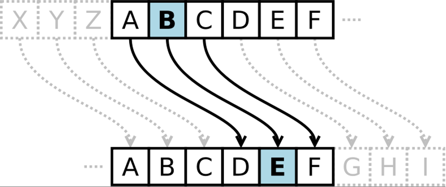

There are a few functions in Python that allow you create and alter lists, in useful ways, without having to use large, cumbersome for loops. These functions are map, filter and reduce, and they each make use of lambda functions to perform their associated task. For the most part, these functions are somewhat inferior to using the list comprehension syntax in Python but they do have their niche purposes. In this tutorial we will make use of both constructs to get a feel for both list comprehensions and using lambda functions
map function and lambda functionsThe map built-in function takes two arguments:
list().filter function and lambda functionsThe filter built-in function takes two arguments:
True if the element should be in the filtered set, or False if it should notlist()map, filter and lambda functionsUsing the reduce function from the functools module and an appropriate lambda function, calculate the maximum number in a list.
The reduce function is a bit more complex. It takes two arguments:
Note: Remember to import reduce from the functools module!
A Caesar Cipher (also known as a shift cipher) is a very simple type of cipher in which each letter in the alphabet is shifted along a set number of characters to produce the encrypted message. For example, with a ‘shift’ of 3, A becomes D, B becomes E, C becomes F etc.

Using list comprehensions or lambda functions, implement a Caesar Cipher with shift 3. You may assume the message string consists of entirely uppercase characters. Your implementation should take a string message and return a newly encrypted string.
You can get a string of all uppercase characters by importing ascii_uppercase from the string module:
from string import ascii_uppercase
You may find the built-in functions ord and chr useful, in conjunction with an ASCII table
Modify your Caesar Cipher so that it can now handle spaces in the original message. The encrypted messages should have spaces where the original had them.